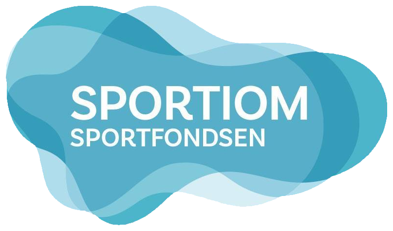
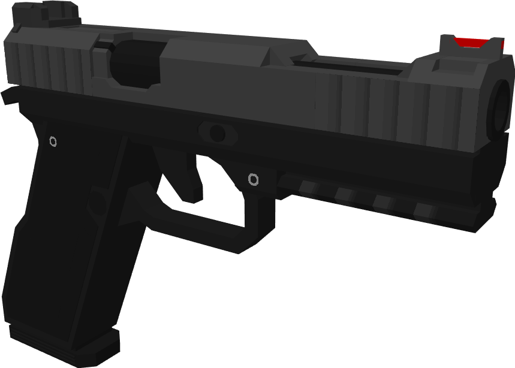
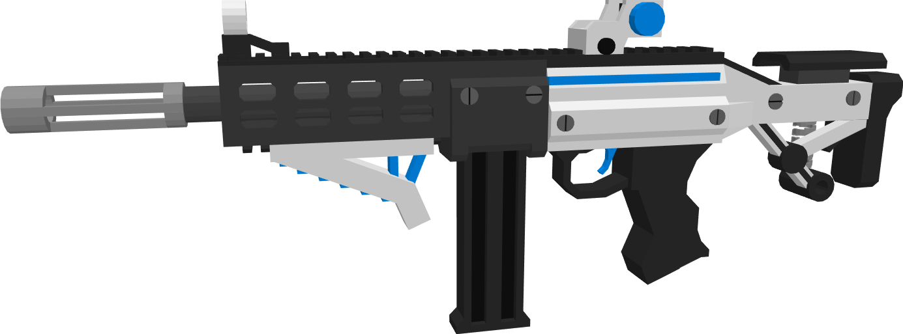
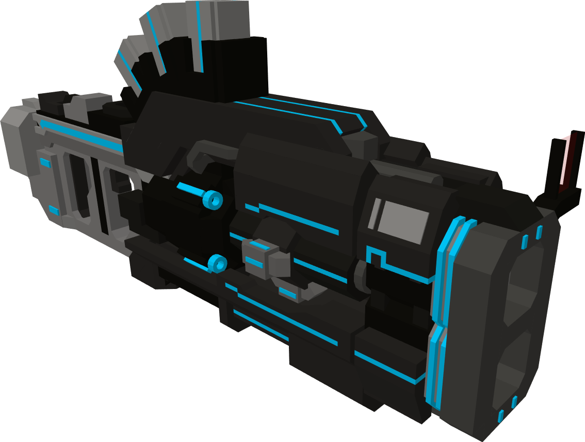
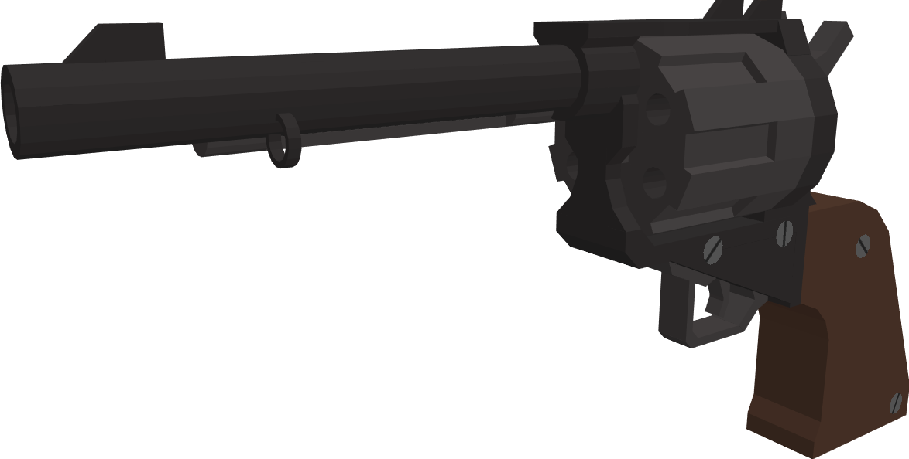
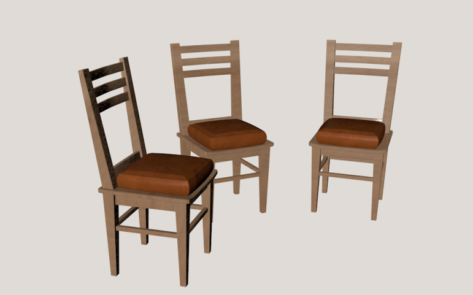
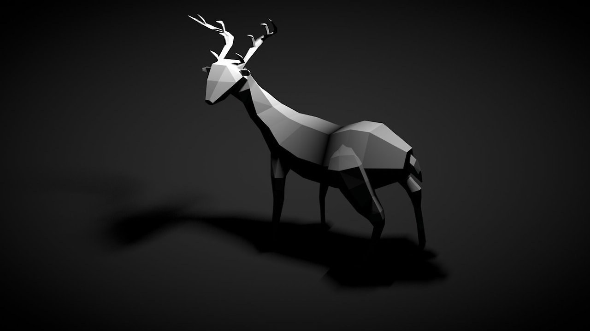

Werken in een zwembad
Tijdens het laatste jaar van mijn vorige MBO ben ik begonnen met werken bij het Sportiom in de weekenden.
Dit heb ik ook nog in de 2 tussenjaren gedaan omdat ik wel echt wat moest doen, een beetje regelmaat zodat ik niet in een "luie zone" kwam.
Ik heb een hele leuke tijd gehad bij het zwembad maar nu zit het in de verbouwing en heb ik nu eigenlijk geen maandelijks inkomen, dus hang ik eigenlijk af van het DUO en mijn projecten thuis.
Ik verdiende niet veel bij het zwembad maar ik heb er wel hele leuke contacten en vrienden aan over gehouden. Daar spreek ik nu af en toe nog mee af, keertje een BBQ, een borrelavond, een keer stappen of naar een festival.

Het Sportiom is nu in verbouwing en zal (als alles volgens plan gaat) in December weer open kunnen. Wellicht kan ik dan ook weer meer werken maar tot dan, heb ik een 0 uren-contract.
|
Mijn oud-stage als werk
In de 2 tussenjaren heb ik naast het zwembad ook nog bij mijn oud stagebedrijf gewerkt. Hier maakte ik websites in WordPress en programmeerde ik wat custom dingetjes in JavaScript.
Nu moet ik wel zeggen dat ik daar veel liever met de opmaak speelde (dus grafisch) dan het echt in elkaar zetten van de site. De opmaak doe je bij websites via CSS, net zoals waar je nu naar kijkt.

Ik heb daar veel geleerd en heb aan best wel wat websites mee mogen werken, als je het interessant vind heb ik hier onder wat voorbeelden.
(Sommige kunnen wat slomer zijn omdat dat gewoon hele grote sites zijn in de achterkant).
-
XQuiry
Dit is een site voor het betrouwbaar maken van digitale examens, zodat er niet gefraudeerd kan worden.
www.xquiry.nl
-
Claire Salon
Nou je snapt denk ik een beetje het idee, dit is een website voor een beauty-salon.
www.clairesalon.nl
-
Johnson Petfood
De titel zegt het een beetje, dit is een website voor het dierenvoer merk Johnson.
www.johnsonpetfoods.nl
|
3D Modeling voor Minecraft
Zoals je wellicht hebt gelezen op de pagina van mijn hobby's, maak ik thuis 3D modellen voor Minecraft voor klanten over de hele wereld.
Voor als je de vraag hebt, nee ik heb geen eigen bedrijf, dus ja wat ik daarmee verdien is zwart.
Op de pagina over mijn hobby's kan je veel meer info vinden over dit werk omdat het zowel mijn grootste hobby als werk is.
Ik zal hier wel nog een paar andere voorbeelden neerzetten die daar niet staan.




|
Wat wil ik eigenlijk gaan doen?
Stiekem heb ik al best veel over 3D gehad, dat zag je op de home-pagina, bij mijn hobby's, na het SintLucas en hier.
Dus ik denk dat je wel kan begrijpen wat ik straks als beroep zou willen uitoefenen. Inderdaad, 3D Game Artist.
Tuurlijk heb ik wel geprobeerd om bijvoorbeeld in Cinema 4D te werken, en daar kwam dit toen uit.
Maar ik zou juist graag op deze opleiding professioneel leren modeleren, maar natuurlijk ook leren tekenen want dat kan ik echt niet.


|